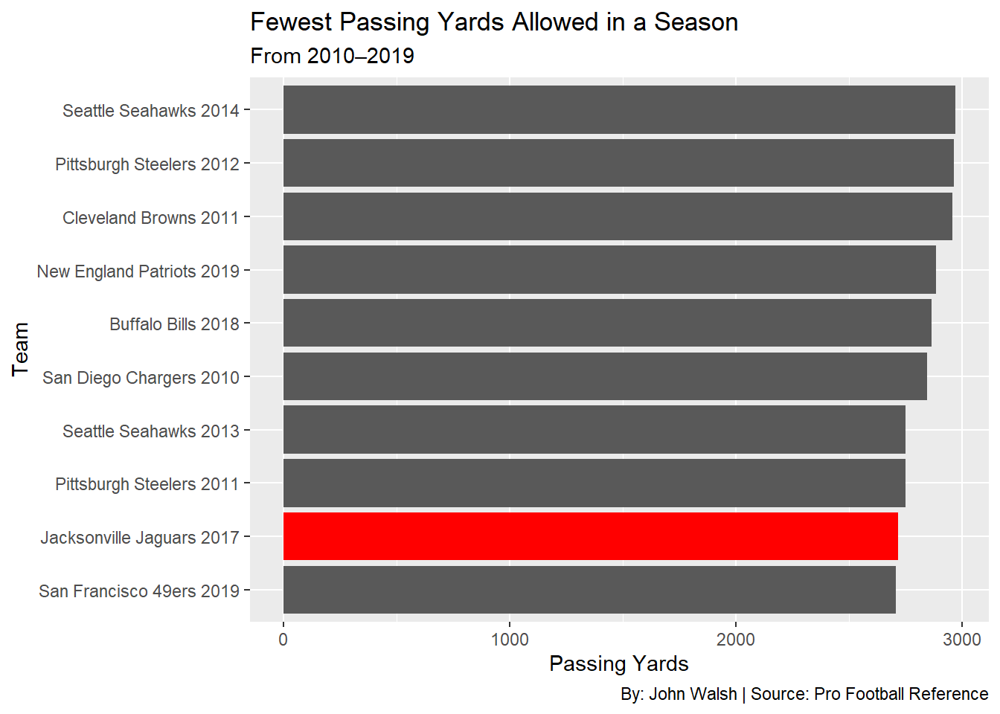
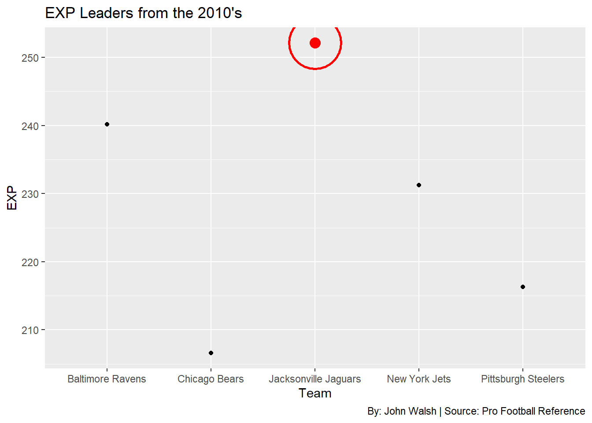

The Greatest Defense of the 2010’s May Come as a Surprise
Author
John Walsh
Published
November 15, 2025
There have been long debates on which team had the best defense in NFL history. Some common teams thrown around are the ’85 Bears, ’69 Vikings or the 2000 Ravens. Instead of looking at the NFL’s 60+ year history, I wanted to look at recent years, specifically the 2010’s decade. There were many iconic defenses that dominated the decade including the “Legion of Boom” Seahawks or the “No Fly Zone” Broncos. However, one group stands above the rest. Dominating all facets of defense, leading their franchise to their first AFC Championship game of this century and arguably the best nickname for the decade: the 2017 Jacksonville Jaguars. Better known as “Sacksonville.”
As their nickname implies, the Jaguars front seven wreaked havoc on every quarterback they faced. Bursting onto the scene, the Jaguars recorded 10 sacks in a 29-7 blowout win versus the Texans. This dominance upfront wasn’t short lived. In week seven, the Jaguars put up another 10-sack game versus the Indianapolis Colts, becoming the first team to record two 10 sack games in a season since the 1984 Chicago Bears. In total, the defense racked up 55 sacks on the season.
The 2017 Jaguars rank fourth on this list, which isn’t number one, however, getting to the quarterback isn’t the only thing a defense looks to accomplish. “Sacksonville” obviously did that very well, but their secondary defense rivaled their pass rush. Led by Jalen Ramsey, AJ Bouye and Barry Church, this secondary terrorized other teams passing attack and only allowed 2,718 passing yards on the season. Here’s how they stack up compared to other defenses in the decade.
Code
top10pyg <- combined_defense |>arrange(PassingYds) |>slice_head(n =10)ggplot() +geom_bar(data=top10pyg, aes(x=reorder(TeamSeason, PassingYds), weight=PassingYds)) +coord_flip() +labs(title ="Fewest Passing Yards Allowed in a Season",subtitle ="From 2010–2019",x ="Team",y ="Passing Yards", caption ="By: John Walsh | Source: Pro Football Reference" ) +geom_col(data = top10pyg |>filter(TeamSeason =="Jacksonville Jaguars 2017"),aes(x =reorder(TeamSeason, PassingYds), y = PassingYds),fill ="red")

Having an elite pass rush combined with a lock down secondary, the 2017 Jaguars make a good case for being the best defense of the decade. However the stat that really puts the Jaguars ahead is their EXP. EXP measures the expected points contributed by all defense. This stat will show how many points the defense creates and contributes their score. This here is the nail in the coffin for the debate.
Code
top10exp <- combined_defense |>arrange(desc(EXP)) |>slice_head(n =5)ggplot() +geom_point(data=top10exp, aes(x=Tm, y=EXP)) +geom_point(data = top10exp |>filter(Tm =="Jacksonville Jaguars"),aes(x = Tm, y = EXP),color ="red",size =4 ) +geom_point(data = top10exp |>filter(Tm =="Jacksonville Jaguars"),aes(x = Tm, y = EXP),shape =21,fill =NA, color ="red", size =20,stroke =1.5) +labs(title ="EXP Leaders from the 2010's",x ="Team",y ="EXP", caption ="By: John Walsh | Source: Pro Football Reference" )

This graph shows the top five teams in EXP over the decade. “Sacksonville” stands alone at the top. Their defense dominated and helped their team win, with other defenses not doing it the same.
The 2010’s decade saw many elite and all-time great defenses. However, the 2017 Jacksonville Jaguars defense leads the decade in important stats such as sacks and passing yards allowed. Their dominance in the EXP stat truly shows their greatness. “Sacksonville” was an iconic defense and are the best defense of that decade.